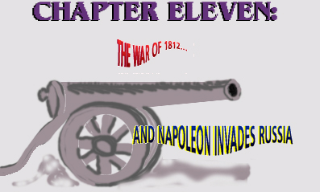
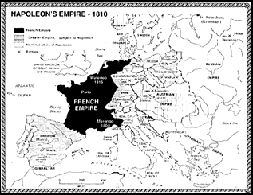
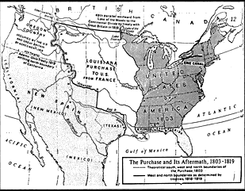
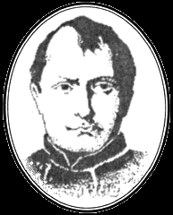
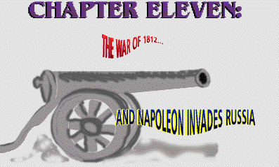

|  |
| |

illustration © Stephen Saunders
This is a piece of history that you may have been a little bit hazy about when they taught it in school:
You might well have asked, “What the heck were we fighting about, anyway?”
Here we present the events that led up to the Battle of New Orleans, which, due to slow communications, was actually fought on January 8, 1815, two weeks after the war had officially ended on December 24, 1814, by the signing of a peace treaty in Belgium.
Cannabis hemp is, as it has been for thousands of years, the biggest business and most important industry on the planet. Its fiber (see chapter 2, “Uses”) moves virtually all the world’s shipping. The entire world’s economy uses and depends upon thousands of different products from the marijuana plant.
Russia, because of its cheap slave/serf labor1, produces 80% of the western world’s cannabis hemp and finished hemp products, and is, by far, the world’s best-quality manufacturer of cannabis hemp for sails, rope, rigging, and nets.
1. Russia—under the Czars’ and Russian Orthodox Church’s domination—continued to have virtual slave/serf/peasant labor for making hemp until 1917.
Cannabis is Russia’s number one trading commodity—ahead of its furs, timber, and iron.
Great Britain buys 90% or more of its marine hemp from Russia; Britain’s navy and world sea trade runs on Russian hemp; each British ship must replace 50 to 100 tons of hemp every year or two.
There is no substitute; flax sails, for example, unlike hemp sails, would start rotting in three months or less from salt air and spray!
The British nobility is hostile toward the new French government primarily because the British are afraid that the 1789-93 French Revolution of commoners could spread, and/or result in a French invasion of England and the loss of its Empire and, of course, its nobility’s heads.
Britain’s navy blockades Napoleon’s France, including Napoleon’s allies on the Continent. Britain accomplishes the blockade of France by closing its (France’s) English Channel and Atlantic (Bay of Biscay) ports with its navy; also, Britain controls absolute access to and from the Mediterranean and Atlantic, by virtue of its control of the straits of Gibraltar.
(SEE MAP ON FACING PAGE.)
The fledgling United States is officially “neutral” in the war between France and Britain. The United States even begins to solve its own foreign problems by sending its navy and marines (1801-1805) to the Mediterranean to stop Tripoli pirates and ransomers from collecting tribute from American Yankee traders operating in the area. “Millions for Defense—not a penny for Tribute” was America’s rallying cry, and the incident came to be memorialized in the second line of the Marine Corps’ hymn: “…to the shores of Tripoli.”
Napoleon, needing money to press war with Great Britain and pursue control of the European continent, bargain-sells the Louisiana Territory to the United States for $15 million, or roughly two-and-a-half cents per acre.
This area is about one-third of what is now the 48 contiguous states.

The Louisiana Purchase gives rise to some Americans’—mostly Westerners’—dreams of “Manifest Destiny.” That is, the United States should extend to the utmost borders of North America: From the top of Canada to the bottom of Mexico and from the Atlantic to the Pacific.
(SEE MAP, NEXT PAGE.)
Britain continues to trade and buy 90% of its hemp directly from Russia.

Napoleon and Czar Alexander of Russia sign the Treaty of Tilset, which cuts off all legal Russian trade with Great Britain, its allies, or any other neutral nation ship acting as agents for Great Britain in Russia.
The treaty also sets up a buffer zone, the Warsaw Duchy (approximately Central Eastern Poland) between Napoleon’s allies and Russia.
(SEE MAP.)

Napoleon’s strategy—and his most important goal with the treaty—is to stop Russian hemp from reaching England, thereby destroying Britain’s navy by forcing it to cannibalize sails, ropes, and rigging from other ships; and Napoleon believes that eventually, with no Russian hemp for its huge navy, Britain will be forced to end its blockade of France and the Continent.
The United States is considered a neutral country by Napoleon, as long as its ships do not trade with or for Great Britain, and the United States considers itself to be neutral in the war between France and Great Britain.
However, Congress passes the 1806 Non-Importation Pact: British articles which are produced in the U.S., but which could also be produced elsewhere, are prohibited. Congress also passes the 1807 Embargo Act, to wit: American ships could not bring or carry products to or from Europe.
These laws hurt America more than Europe; however, many Yankee traders ignored the law anyway.
After the Treaty of Tilset cuts off their Russian trade, Britain claims that there are no neutral countries or shipping lanes.
Hence, any ship that trades with Napoleon’s “Continental System” of allies are the enemy and are subject to blockade.
On this pretext, Britain confiscates American ships and cargo and sends sailors back to the United States at American ship owners’ expense.
Britain “impresses” some American sailors into service in the British Navy. However, England claims that they only “impress” those sailors who are British subject—and whose American shipping companies refused to pay for the sailors’ return fares.
Secretly, however, Britain offers the captured American traders a “deal” (actually a blackmail proposition) when they “overhaul”—board and confiscate—an American ship and bring it into an English port.
The deal: Either lose your ship and cargos forever, or go to Russia and secretly buy hemp for Britain, who will pay American traders with gold in advance, and more gold when the hemp is delivered back.
At the same time, the Americans will be allowed to keep and trade their own goods (rum, sugar, spices, cotton, coffee, tobacco) to the Czar for hemp — a double profit for the Americans.
Our shrewd Yankee traders, faced with the choice of either running British blockades—and risking having their ships, cargo, and crews confiscated—or acting as secret (illegal) licensees for Britain, with safety and profits guaranteed, mostly choose the latter.
John Quincy Adams (later to become president), who was American Consul at St. Petersburg, in 1809 noted:
“As many as 600 clipper ships, flying the American flag, in a two week period, were in Kronstadt” (the Port of St. Petersburg, once called Leningrad in the former USSR) loading principally cannabis hemp for England (illegally) and America, where quality hemp is also in great demand.
(Bennis, John Q. Adam and the American Foreign Policy, New York, NY, Alfred A. Knopf, 1949.)
The United States passes the 1809 Non-Intercourse Act which resumes legal trade with Europe, except for Britain and France. It is soon replaced with the Macon Bill resuming all legal trade.
Napoleon insists that Czar Alexander stop all trade with the independent United States traders as they are being coerced into being illegal traders for Great Britain’s hemp.
Napoleon wants the Czar to allow him to place/station French agents and troops in Kronstadt to make sure the Czar and his port authorities live up to the treaty.
The Czar says “Nyet!” despite his treaty with France, and turns a “blind eye” to the illegal American traders, probably because he needs the popular, profitable trade goods the Americans are bringing him and his nobles—as well as the hard gold he is getting from the Americans’ (illegal) purchases of hemp for Great Britain.
Napoleon’s allies invade the Duchy of Warsaw.
(SEE MAP)
Napoleon orders the Czar to stop all trade with the American traders! The Czar responds by withdrawing Russia from that part of the Treaty of Tilset that would require him to stop selling goods to neutral American ships.
Napoleon, infuriated with the Czar for allowing Britain’s life blood of navy hemp to reach England, builds up his army and invades Russia, planning to punish the Czar and ultimately stop hemp from reaching the British Navy.
England, again an ally and full trading partner of Russia, is still stopping American ships from trading with the rest of the Continent.
Britain also blockades all U.S. traders from Russia at the Baltic Sea and insists that American traders have to now secretly buy other strategic goods for them (mostly from Mediterranean ports), specifically from Napoleon and his allies on the Continent who by this time are happy to sell anything to raise capital.
The United States, cut off from 80% of its Russian hemp supply, debates war in Congress.3
3. Crosby, Alfred, Jr., America, Russia, Hemp & Napoleon, Ohio State University Press, 1965.
Ironically, it is representatives of the western states who argue for war under the excuse of “impressed” American sailors. However, the representatives of the maritime states, fearful of loss of trade, argue against war, even though it’s their shipping, crews, and states that are allegedly afflicted.
Not one senator from a maritime state votes for war with Great Britain, whereas virtually all western senators vote for war, hoping to take Canada from Britain and fulfill their dream of “Manifest Destiny,” in the mistaken belief that Great Britain is too busy with the European wars against Napoleon to protect Canada.
It’s interesting to note that Kentucky, a big supporter of the war which disrupted the overseas hemp trade, was actively building up its own domestic hemp industry.
At this time, 1812, American ships could pick up hemp from Russia and return with it three times faster than shippers could get hemp from Kentucky to the East coast over land (at least, until the Erie Canal was completed in 1825; shortening travel time dramatically by as much as 90%).
(SEE MAP.)
The western states win in Congress, and on June 18, 1812, the United States is at war with Britain.
America enters the war on the side of Napoleon, who marches on Moscow in June of 1812.
Napoleon is soon defeated in Russia by the harsh winter, the Russian scorched-earth policy, 2,000 miles of snowy and muddy supply lines—and by Napoleon not stopping for the winter and regrouping before marching on Moscow, as was the original battle plan.
Of the 450,000 to 600,000 men Napoleon start with, only 180,000 ever make it back.
Britain, after initial success in war with the United States (including the burning of Washington in retaliation for the earlier American burning of Toronto, then the colonial Canadian capitol), finds its finances and military stretched thin—with blockades, war in Spain with France, and a tough new America on the seas.
Britain agrees to peace, and signs a treaty with the United States in December, 1814. The actual terms of the treaty give little to either side.
In effect, Britain agrees it will never again interfere with American shipping.
And the United States agrees to give up all claims to Canada forever (which we did, with the exception of “54-40 or Fight”).
Britain defeats Napoleon in Spain and banishes him to Elba, but he escapes for 100 days.
Britain defeats Napoleon at Waterloo (June 18) and banishes him to St. Helena Island off Antarctica where, in 1821, he dies and his hairs and private parts are sold to the public for souvenirs.
Tragically for Britain, more than two weeks after the December 24, 1814, signing of the Ghent peace treaty between the United States and Britain, Andrew Jackson defeats a huge British attack force at New Orleans (January 8, 1815) while news of the treaty slowly makes its way across the Atlantic.
American, British, French, Canadian, and Russian schools each teach children their own, completely different versions of history with virtually no mention of hemp in this war (nor, in the American versions, at any other time in history).
1. Russia—under the Czars’ and Russian Orthodox Church’s domination—continued to have virtual slave/serf/peasant labor for making hemp until 1917.
2. One of America’s leading foreign trade deficits, until this century, was to Russia for hemp.
3. Crosby, Alfred, Jr., America, Russia, Hemp & Napoleon, Ohio State University Press, 1965.
This situation only began to improve after the 1898 (Spanish-American War) conquest and acquisition of the Philippines with its (cheap) “coolie” labor and manila-hemp (abaca).
I wish to apologize to history buffs for all the nuances I have left out from the outline of the 1812 Wars (for example, the involvement of the Rothschilds, the Illuminati, stock market manipulations, etc., but I did not want to write “War and Peace”. It’s been done.
My intention is that our children are taught a true, comprehensive history in our schools, not watered-down nonsense that hides the real facts and makes the War of 1812 totally unintelligible and seemingly without rhyme or reason when taught in school by teachers who don’t have the foggiest reason why it was fought. But it’s no wonder. Our American school teachers themselves often haven’t the foggiest understanding of why this war was really fought. If they do know—or have recently learned—they are generally much too intimidated to teach it.
the authorized on-line version of Jack Herer’s “The Emperor Wears No Clothes”
| previous page | next page |

| previous page | next page |
|
 |
 |
 |
 |